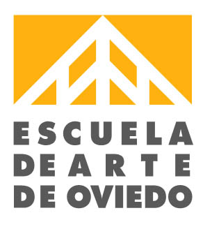

Academic Background |
|
|
|
|
 |
Udemy |
2022 - 2024 |
Technology and Programming courses |
HTML5, CSS3, Javascript, MongoDB, Bootstrap, DOM, Github, Express.js, Node.js, EJS, Mongoose, Authentication & Secutiry, React.js, DApp, Blockchain, Crypto Token, NFT |
 |
Hack a Boss |
2022 - 2023 |
Fullstack Web Developer |
HTML5, CSS3, Javascript, Nodejs, Json, MySQL, APIS, Postman |
 |
IES Juan José Calvo Miguel |
2020 - 2022 |
Multiplatform Application Development Technician |
HTML5, CSS3, Javascript, Sistemas Informáticos, Android 12, Android Studio, JAVA |
 |
University of Oviedo |
2015 - 2019 |
BA in English Studies |
History and Literature of the English-speaking countries and their former colonies, Semantics, Grammar, Pragmatics, Lexicology and Syntax of the English Language. Advanced Academic English and English for Business. |
|
University of Oviedo |
2015 - 2019 |
Portuguese Minor |
History and Literature of Portuguese-speaking countries and their former colonies, Semantics, Grammar, Pragmatics, Lexicology and Syntax of the Portuguese Language. |
|
Loromi |
2013 - 2014 |
Aesthetics and Wellness Technician |
Series of professional courses on "Diode and SHR laser hair removal", "Eyelash extensions hair by hair, hybrid volume, Russian, glamour", "Manicures and pedicures", "Semi-permanent enamelling", "Gel sculpting", "Eyebrow design", "Eyebrow and eyelash tinting", "Indiba radiofrequency", "Eyebrow and eyelashes dyeing", "Indiba radiofrequency", "Eyebrow and eyelashes dyeing", "Eyebrow and eyelashes dyeing".
|
|  |
Oviedo's Art School |
2011 - 2013 |
High School of Visual Arts and Design |
Photography, Sculpture, Graphic-Plastic Techniques, Printmaking, Illustration, Classical Design, Art History, History of Spain, Digital Design. |
Work Experience |
|
|
|
|
 |
DXC Technology · Avilés |
Jan 2023 - Now |
Service Desk Agent |
Level 1 and 2 IT incident resolution, B2B modality, for companies such as Campofrio (food) and FCC (environment), in the following languages: Spanish, Portuguese and English, using different ticketing tools; remote connection, technical support. |
 |
CB Estética y Bienestar · Gijón |
Jan 2022 - Jan 2023 |
Product Designer |
Product design for the brand, paying attention to the needs of the market and looking for the best that can be offered to customers, according to their demands and needs. Global design of the website and e-commerce. Development of a sales and marketing strategy based on the local market. B2B sales strategy design. Customer management with CRM hubspot and sales of specialised beauty and wellness equipment for the Spanish, Italian, Portuguese and Latin American markets. |
 |
Stary PTE LTD · Singapur |
2019 - 2022 |
Creative Writer |
Writing of full-length creative novels in Portuguese, based on the demand of the youth market, in drama, comedy, romance, mystery and horror genres, with the aim of increasing the range of options available in the company's reading application, as well as their quality, complying with the standards of grammar, spelling, cohesion and concordance. |
 |
Betterplace · Oviedo |
Nov 2022 - Dez 2022 |
Business Development Manager |
Expansion of the company's application, which is a B2B real estate recruitment software, aimed at real estate agents who want to expand their portfolio to the Portuguese market through cold calls and sending emails. Demonstration and live explanation of the product and closing of sales with the aim of obtaining new monthly subscribers. Customer management through the CRM Pipedrive and call management with the Aircall application. |
 |
coudraydreams |
2019 - Now |
Game Developer |
Project and personal branding. Script development, character and sprite design, background design, visual novel programming in Kocho and Javascript, including sound effects and copyright-free songs. |
 |
Adecco · Gijón |
2019 - 2022 |
Bartender |
Extra bar, dining room and terrace waitressing services for different restaurants, bars, pubs and hotels in Asturias. Some companies: Café Pub Las Palomas, Discobar DC10, Bar La Esquina, Hotel AC, Hotel Palacio de Cristal, Club de Regatas de Gijón, Discoteca Mamel, Parrilla Monteviejo, Centro Asturiano de Oviedo, Club de Regatas de Gijón, Club de Golf de Castiello, Restaurante Ginos, Restaurante Toro Sushi, Pura Vida Beach Club de Gijón. |
|
Universidad de Oviedo |
Jan 2022 - Jun 2022 |
Investigadora |
Assistant researcher assigned to the University of Oviedo project EURICAR'20, which consisted of an in-depth search of newspapers published in the 17th century for any mention of the Carlist Wars in Portugal, which could help to assemble a complete puzzle of the panorama of the war in the following countries: France, Portugal, England and Spain. Active reading of articles, prose, plays, novels, poetry, and analysis of old photographs. Maximum seriousness and commitment, production of historical-documentary writing for subsequent publication of the group work of the research team. |
|
Centros Ideal · Avilés |
Dez 2021 - Jun 2022 |
Esteticista |
Cabin beautician, applying facial cleansing treatments, body and facial hifu, vaccuntherapy, cavitation, body and facial radiofrequency, diode laser hair removal and maderotherapy. Appointment and client management with CRM. |
 |
LA Epic Club Crawls · Las Vegas |
Apr 2018 - Aug 2018 |
Salesperson |
Street sales in English of a promotional tour of various Las Vegas establishments such as bars, nightclubs, hotels, casinos and exclusive parties. Tour escorting clients, showing them the best of each location and guiding them through their experience. |